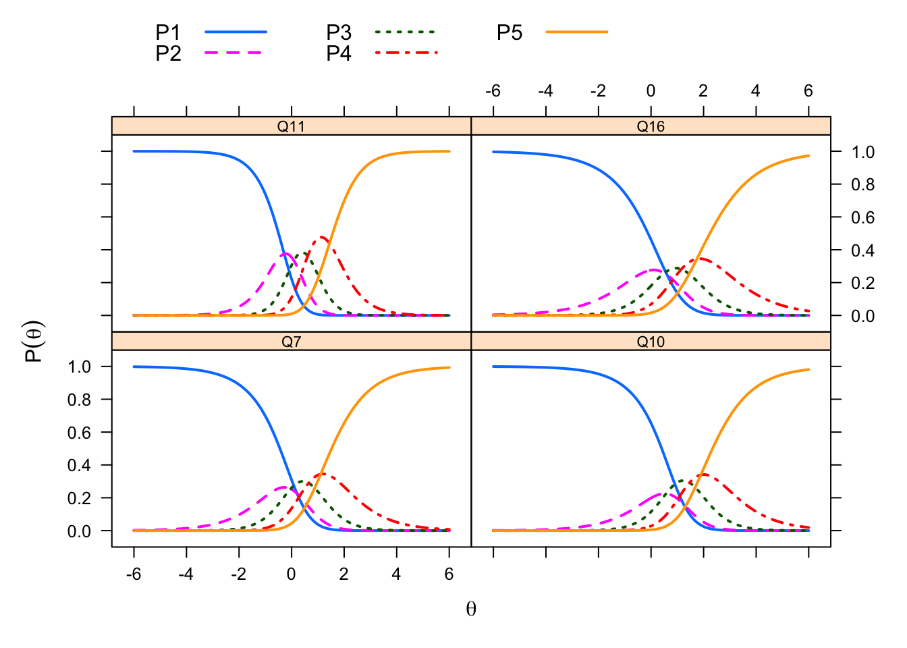

Item Analysis
In this chapter, we examine the technical quality of the 66 items that Dan piloted for the SHAS. We begin by defining item analysis and discussing its importance. Then document our item analyses from both classical test theory (CTT) and item response theory (IRT) frameworks. We conclude by summarizing what we learn from these analyses to help us refine these items and develop better ones in the future.
About Item Analysis
# LOAD PACKAGES
library(Hmisc) # for item statistics
library(psych) # for psychometric analysis
library(psychTools) # for psychometric analysis
library(CTT) # for classical test theory stats
library(pastecs) # for item statistics
library(ltm) # for point-biserial correlations
library(corrplot) # for correlation plot
library(knitr) # how RMarkdown compiles all the code into documents
# LOAD DATA
all <- read.csv("data/all.csv")
items <- read.csv("data/items.csv")
ext_items <- read.csv("data/ext_items.csv")
int_items <- read.csv("data/int_items.csv")
all_l <- read.csv("data/all_l.csv") # listwise
items_l <- read.csv("data/items_l.csv") # listwise
ext_items_l <- read.csv("data/ext_items_l.csv") # listwise
int_items_l <- read.csv("data/int_items_l.csv") # listwiseClassical Item Analysis
# DESCRIBE DATA options(digits=2) describe(items)
# this doesn't work knitr::kable(itm_stats, caption =
# 'Items Statistics', booktabs = TRUE, digits=2)
# A POSSIBLE BAR PLOT OF ITEM STATISTICS
# barplot(item_stats$nbr.val, main='Complete Cases',
# horiz=TRUE, col='red') barplot(item_stats$nbr.val,
# main='Complete Cases', horiz=FALSE, col='red', ylim =
# c(0,8000),names.arg=labs)# CLASSICAL ITEM ANALYSIS
# CTT::itemAnalysis(items, itemReport=TRUE, NA.Delete=TRUE,
# rBisML=FALSE, hardFlag, easyFlag, pBisFlag, bisFlag,
# flagStyle = c('X',''))
CTT::itemAnalysis(items, itemReport = TRUE, NA.Delete = TRUE,
rBisML = FALSE, flagStyle = c("X", ""))
Number of Items
66
Number of Examinees
2979
Coefficient Alpha
0.981 # MORE ITEM STATISTICS
library(pastecs)
item_stats <- pastecs::stat.desc(items) # use the stat.desc() to render data frame of item stats
item_stats <- t(item_stats) # transpose the data frame
item_stats <- data.frame(item_stats)
item_stats[order(item_stats$mean), ] # order by mean nbr.val nbr.null nbr.na min max range sum median mean SE.mean
Q46 3211 0 11 1 5 4 3560 1 1.108689 0.008490661
Q41 3211 0 11 1 5 4 4091 1 1.274058 0.015489036
Q17 3208 0 14 1 5 4 4288 1 1.336658 0.017179617
Q47 3218 0 4 1 5 4 4758 1 1.478558 0.015127455
Q60 3214 0 8 1 5 4 4784 1 1.488488 0.017484938
Q55 3205 0 17 1 5 4 5067 1 1.580967 0.016718556
Q72 3070 0 152 1 5 4 5027 1 1.637459 0.017919686
Q81 3073 0 149 1 5 4 5435 1 1.768630 0.018681107
Q65 3220 0 2 1 5 4 5868 1 1.822360 0.020744262
Q10 3220 0 2 1 5 4 5887 1 1.828261 0.020808433
Q26 3212 0 10 1 5 4 6005 1 1.869552 0.022437462
Q24 3221 0 1 1 5 4 6074 1 1.885750 0.020727511
Q23 3219 0 3 1 5 4 6170 1 1.916744 0.019956972
Q27 3217 0 5 1 5 4 6236 1 1.938452 0.023790856
Q31 3217 0 5 1 5 4 6531 2 2.030152 0.020911316
Q30 3219 0 3 1 5 4 6581 2 2.044424 0.022072319
Q43 3217 0 5 1 5 4 6577 2 2.044451 0.020824627
Q68 3073 0 149 1 5 4 6316 2 2.055321 0.022266844
Q52 3217 0 5 1 5 4 6683 2 2.077401 0.022288789
Q70 3069 0 153 1 5 4 6477 2 2.110459 0.021364098
Q49 3213 0 9 1 5 4 6822 2 2.123249 0.021761390
Q16 3217 0 5 1 5 4 6851 2 2.129624 0.022434067
Q57 3219 0 3 1 5 4 6931 2 2.153153 0.023485372
Q20 3217 0 5 1 5 4 6939 2 2.156979 0.024428124
Q62 3220 0 2 1 5 4 6961 2 2.161801 0.021779530
Q59 3217 0 5 1 5 4 6962 2 2.164128 0.021672305
Q21 3218 0 4 1 5 4 7081 1 2.200435 0.025831450
Q50 3219 0 3 1 5 4 7181 1 2.230817 0.025990704
Q82 3071 0 151 1 5 4 6870 2 2.237056 0.021826439
Q64 3220 0 2 1 5 4 7263 2 2.255590 0.022468413
Q28 3216 0 6 1 5 4 7276 2 2.262438 0.022075077
Q40 3220 0 2 1 5 4 7334 2 2.277640 0.024425246
Q63 3217 0 5 1 5 4 7396 2 2.299036 0.021966859
Q19 3219 0 3 1 5 4 7460 2 2.317490 0.023452526
Q51 3216 0 6 1 5 4 7508 2 2.334577 0.024281404
Q53 3218 0 4 1 5 4 7596 2 2.360472 0.023856535
Q79 3068 0 154 1 5 4 7350 2 2.395698 0.022911965
Q34 3219 0 3 1 5 4 7919 2 2.460081 0.023465067
Q29 3213 0 9 1 5 4 7941 2 2.471522 0.023642519
Q73 3072 0 150 1 5 4 7672 2 2.497396 0.023590018
Q11 3216 0 6 1 5 4 8090 2 2.515547 0.023890349
Q58 3220 0 2 1 5 4 8161 2 2.534472 0.023641218
Q7 3215 0 7 1 5 4 8151 2 2.535303 0.025218942
Q42 3215 0 7 1 5 4 8344 3 2.595334 0.022038135
Q44 3217 0 5 1 5 4 8404 3 2.612372 0.023883741
Q56 3217 0 5 1 5 4 8760 3 2.723034 0.024094459
Q18 3220 0 2 1 5 4 8841 3 2.745652 0.024196861
Q45 3219 0 3 1 5 4 8883 3 2.759553 0.025541840
Q78 3071 0 151 1 5 4 8521 3 2.774666 0.023426479
Q36 3216 0 6 1 5 4 8934 3 2.777985 0.023564784
Q61 3219 0 3 1 5 4 8950 3 2.780367 0.025864513
Q32 3219 0 3 1 5 4 8970 3 2.786580 0.023280773
Q74 3071 0 151 1 5 4 8569 3 2.790296 0.023365007
Q76 3072 0 150 1 5 4 8686 3 2.827474 0.026741805
Q54 3217 0 5 1 5 4 9383 3 2.916693 0.024734726
Q37 3221 0 1 1 5 4 9469 3 2.939770 0.024280108
Q38 3217 0 5 1 5 4 9488 3 2.949332 0.024725087
Q71 3074 0 148 1 5 4 9240 3 3.005856 0.024589907
Q69 3071 0 151 1 5 4 9255 3 3.013676 0.021621379
Q39 3219 0 3 1 5 4 9826 3 3.052501 0.026028978
Q80 3070 0 152 1 5 4 9423 3 3.069381 0.022153977
Q77 3075 0 147 1 5 4 9479 3 3.082602 0.023042783
Q35 3217 0 5 1 5 4 10049 3 3.123718 0.024544640
Q25 3217 0 5 1 5 4 10243 3 3.184022 0.023217693
Q66 3216 0 6 1 5 4 10510 3 3.268035 0.024787878
Q22 3218 0 4 1 5 4 10713 4 3.329086 0.026288815
CI.mean.0.95 var std.dev coef.var
Q46 0.01664767 0.2314852 0.4811291 0.4339622
Q41 0.03036940 0.7703517 0.8776968 0.6888987
Q17 0.03368414 0.9468067 0.9730399 0.7279646
Q47 0.02966043 0.7364067 0.8581415 0.5803907
Q60 0.03428276 0.9825939 0.9912587 0.6659502
Q55 0.03278015 0.8958299 0.9464829 0.5986733
Q72 0.03513580 0.9858235 0.9928864 0.6063579
Q81 0.03662873 1.0724271 1.0355805 0.5855270
Q65 0.04067330 1.3856446 1.1771341 0.6459393
Q10 0.04079912 1.3942306 1.1807754 0.6458462
Q26 0.04399320 1.6170483 1.2716321 0.6801803
Q24 0.04064045 1.3838372 1.1763661 0.6238188
Q23 0.03912966 1.2820657 1.1322834 0.5907326
Q27 0.04664678 1.8208375 1.3493841 0.6961143
Q31 0.04100086 1.4067398 1.1860606 0.5842225
Q30 0.04327723 1.5682559 1.2523002 0.6125444
Q43 0.04083089 1.3951006 1.1811438 0.5777314
Q68 0.04365941 1.5236314 1.2343546 0.6005655
Q52 0.04370167 1.5981738 1.2641890 0.6085435
Q70 0.04188939 1.4007674 1.1835402 0.5607974
Q49 0.04266762 1.5215421 1.2335081 0.5809530
Q16 0.04398652 1.6190755 1.2724290 0.5974900
Q57 0.04604780 1.7754803 1.3324715 0.6188466
Q20 0.04789627 1.9196909 1.3855291 0.6423472
Q62 0.04270315 1.5274003 1.2358804 0.5716901
Q59 0.04249293 1.5109889 1.2292229 0.5679991
Q21 0.05064777 2.1472550 1.4653515 0.6659372
Q50 0.05096001 2.1744882 1.4746146 0.6610200
Q82 0.04279591 1.4630042 1.2095471 0.5406869
Q64 0.04405384 1.6255512 1.2749711 0.5652495
Q28 0.04328265 1.5671858 1.2518729 0.5533292
Q40 0.04789061 1.9210283 1.3860116 0.6085298
Q63 0.04307046 1.5523405 1.2459296 0.5419356
Q19 0.04598340 1.7705175 1.3306079 0.5741591
Q51 0.04760860 1.8961104 1.3769933 0.5898256
Q53 0.04677555 1.8314741 1.3533196 0.5733258
Q79 0.04492436 1.6105716 1.2690830 0.5297342
Q34 0.04600799 1.7724116 1.3313195 0.5411690
Q29 0.04635595 1.7959665 1.3401367 0.5422314
Q73 0.04625382 1.7095341 1.3074915 0.5235420
Q11 0.04684186 1.8355280 1.3548166 0.5385773
Q58 0.04635336 1.7996811 1.3415220 0.5293102
Q7 0.04944684 2.0447240 1.4299385 0.5640108
Q42 0.04321022 1.5614592 1.2495836 0.4814731
Q44 0.04682890 1.8350832 1.3546524 0.5185527
Q56 0.04724205 1.8676067 1.3666041 0.5018682
Q18 0.04744281 1.8852716 1.3730519 0.5000822
Q45 0.05007992 2.1000291 1.4491477 0.5251386
Q78 0.04593316 1.6853645 1.2982159 0.4678818
Q36 0.04620352 1.7858418 1.3363539 0.4810515
Q61 0.05071259 2.1534242 1.4674550 0.5277919
Q32 0.04564665 1.7446800 1.3208634 0.4740088
Q74 0.04581263 1.6765312 1.2948093 0.4640401
Q76 0.05243364 2.1968613 1.4821813 0.5242069
Q54 0.04849742 1.9681821 1.4029191 0.4809966
Q37 0.04760603 1.8988557 1.3779897 0.4687406
Q38 0.04847852 1.9666483 1.4023724 0.4754882
Q71 0.04821432 1.8587356 1.3633546 0.4535662
Q69 0.04239384 1.4356435 1.1981834 0.3975820
Q39 0.05103505 2.1808973 1.4767861 0.4837955
Q80 0.04343813 1.5067520 1.2274983 0.3999172
Q77 0.04518081 1.6327323 1.2777841 0.4145148
Q35 0.04812472 1.9380474 1.3921377 0.4456669
Q25 0.04552297 1.7341601 1.3168751 0.4135885
Q66 0.04860164 1.9760355 1.4057153 0.4301409
Q22 0.05154452 2.2239657 1.4912966 0.4479597item_stats[order(item_stats$nbr.val), ] # order by N cases nbr.val nbr.null nbr.na min max range sum median mean SE.mean
Q79 3068 0 154 1 5 4 7350 2 2.395698 0.022911965
Q70 3069 0 153 1 5 4 6477 2 2.110459 0.021364098
Q72 3070 0 152 1 5 4 5027 1 1.637459 0.017919686
Q80 3070 0 152 1 5 4 9423 3 3.069381 0.022153977
Q69 3071 0 151 1 5 4 9255 3 3.013676 0.021621379
Q74 3071 0 151 1 5 4 8569 3 2.790296 0.023365007
Q78 3071 0 151 1 5 4 8521 3 2.774666 0.023426479
Q82 3071 0 151 1 5 4 6870 2 2.237056 0.021826439
Q73 3072 0 150 1 5 4 7672 2 2.497396 0.023590018
Q76 3072 0 150 1 5 4 8686 3 2.827474 0.026741805
Q68 3073 0 149 1 5 4 6316 2 2.055321 0.022266844
Q81 3073 0 149 1 5 4 5435 1 1.768630 0.018681107
Q71 3074 0 148 1 5 4 9240 3 3.005856 0.024589907
Q77 3075 0 147 1 5 4 9479 3 3.082602 0.023042783
Q55 3205 0 17 1 5 4 5067 1 1.580967 0.016718556
Q17 3208 0 14 1 5 4 4288 1 1.336658 0.017179617
Q41 3211 0 11 1 5 4 4091 1 1.274058 0.015489036
Q46 3211 0 11 1 5 4 3560 1 1.108689 0.008490661
Q26 3212 0 10 1 5 4 6005 1 1.869552 0.022437462
Q29 3213 0 9 1 5 4 7941 2 2.471522 0.023642519
Q49 3213 0 9 1 5 4 6822 2 2.123249 0.021761390
Q60 3214 0 8 1 5 4 4784 1 1.488488 0.017484938
Q7 3215 0 7 1 5 4 8151 2 2.535303 0.025218942
Q42 3215 0 7 1 5 4 8344 3 2.595334 0.022038135
Q11 3216 0 6 1 5 4 8090 2 2.515547 0.023890349
Q28 3216 0 6 1 5 4 7276 2 2.262438 0.022075077
Q36 3216 0 6 1 5 4 8934 3 2.777985 0.023564784
Q51 3216 0 6 1 5 4 7508 2 2.334577 0.024281404
Q66 3216 0 6 1 5 4 10510 3 3.268035 0.024787878
Q16 3217 0 5 1 5 4 6851 2 2.129624 0.022434067
Q20 3217 0 5 1 5 4 6939 2 2.156979 0.024428124
Q25 3217 0 5 1 5 4 10243 3 3.184022 0.023217693
Q27 3217 0 5 1 5 4 6236 1 1.938452 0.023790856
Q31 3217 0 5 1 5 4 6531 2 2.030152 0.020911316
Q35 3217 0 5 1 5 4 10049 3 3.123718 0.024544640
Q38 3217 0 5 1 5 4 9488 3 2.949332 0.024725087
Q43 3217 0 5 1 5 4 6577 2 2.044451 0.020824627
Q44 3217 0 5 1 5 4 8404 3 2.612372 0.023883741
Q52 3217 0 5 1 5 4 6683 2 2.077401 0.022288789
Q54 3217 0 5 1 5 4 9383 3 2.916693 0.024734726
Q56 3217 0 5 1 5 4 8760 3 2.723034 0.024094459
Q59 3217 0 5 1 5 4 6962 2 2.164128 0.021672305
Q63 3217 0 5 1 5 4 7396 2 2.299036 0.021966859
Q21 3218 0 4 1 5 4 7081 1 2.200435 0.025831450
Q22 3218 0 4 1 5 4 10713 4 3.329086 0.026288815
Q47 3218 0 4 1 5 4 4758 1 1.478558 0.015127455
Q53 3218 0 4 1 5 4 7596 2 2.360472 0.023856535
Q19 3219 0 3 1 5 4 7460 2 2.317490 0.023452526
Q23 3219 0 3 1 5 4 6170 1 1.916744 0.019956972
Q30 3219 0 3 1 5 4 6581 2 2.044424 0.022072319
Q32 3219 0 3 1 5 4 8970 3 2.786580 0.023280773
Q34 3219 0 3 1 5 4 7919 2 2.460081 0.023465067
Q39 3219 0 3 1 5 4 9826 3 3.052501 0.026028978
Q45 3219 0 3 1 5 4 8883 3 2.759553 0.025541840
Q50 3219 0 3 1 5 4 7181 1 2.230817 0.025990704
Q57 3219 0 3 1 5 4 6931 2 2.153153 0.023485372
Q61 3219 0 3 1 5 4 8950 3 2.780367 0.025864513
Q10 3220 0 2 1 5 4 5887 1 1.828261 0.020808433
Q18 3220 0 2 1 5 4 8841 3 2.745652 0.024196861
Q40 3220 0 2 1 5 4 7334 2 2.277640 0.024425246
Q58 3220 0 2 1 5 4 8161 2 2.534472 0.023641218
Q62 3220 0 2 1 5 4 6961 2 2.161801 0.021779530
Q64 3220 0 2 1 5 4 7263 2 2.255590 0.022468413
Q65 3220 0 2 1 5 4 5868 1 1.822360 0.020744262
Q24 3221 0 1 1 5 4 6074 1 1.885750 0.020727511
Q37 3221 0 1 1 5 4 9469 3 2.939770 0.024280108
CI.mean.0.95 var std.dev coef.var
Q79 0.04492436 1.6105716 1.2690830 0.5297342
Q70 0.04188939 1.4007674 1.1835402 0.5607974
Q72 0.03513580 0.9858235 0.9928864 0.6063579
Q80 0.04343813 1.5067520 1.2274983 0.3999172
Q69 0.04239384 1.4356435 1.1981834 0.3975820
Q74 0.04581263 1.6765312 1.2948093 0.4640401
Q78 0.04593316 1.6853645 1.2982159 0.4678818
Q82 0.04279591 1.4630042 1.2095471 0.5406869
Q73 0.04625382 1.7095341 1.3074915 0.5235420
Q76 0.05243364 2.1968613 1.4821813 0.5242069
Q68 0.04365941 1.5236314 1.2343546 0.6005655
Q81 0.03662873 1.0724271 1.0355805 0.5855270
Q71 0.04821432 1.8587356 1.3633546 0.4535662
Q77 0.04518081 1.6327323 1.2777841 0.4145148
Q55 0.03278015 0.8958299 0.9464829 0.5986733
Q17 0.03368414 0.9468067 0.9730399 0.7279646
Q41 0.03036940 0.7703517 0.8776968 0.6888987
Q46 0.01664767 0.2314852 0.4811291 0.4339622
Q26 0.04399320 1.6170483 1.2716321 0.6801803
Q29 0.04635595 1.7959665 1.3401367 0.5422314
Q49 0.04266762 1.5215421 1.2335081 0.5809530
Q60 0.03428276 0.9825939 0.9912587 0.6659502
Q7 0.04944684 2.0447240 1.4299385 0.5640108
Q42 0.04321022 1.5614592 1.2495836 0.4814731
Q11 0.04684186 1.8355280 1.3548166 0.5385773
Q28 0.04328265 1.5671858 1.2518729 0.5533292
Q36 0.04620352 1.7858418 1.3363539 0.4810515
Q51 0.04760860 1.8961104 1.3769933 0.5898256
Q66 0.04860164 1.9760355 1.4057153 0.4301409
Q16 0.04398652 1.6190755 1.2724290 0.5974900
Q20 0.04789627 1.9196909 1.3855291 0.6423472
Q25 0.04552297 1.7341601 1.3168751 0.4135885
Q27 0.04664678 1.8208375 1.3493841 0.6961143
Q31 0.04100086 1.4067398 1.1860606 0.5842225
Q35 0.04812472 1.9380474 1.3921377 0.4456669
Q38 0.04847852 1.9666483 1.4023724 0.4754882
Q43 0.04083089 1.3951006 1.1811438 0.5777314
Q44 0.04682890 1.8350832 1.3546524 0.5185527
Q52 0.04370167 1.5981738 1.2641890 0.6085435
Q54 0.04849742 1.9681821 1.4029191 0.4809966
Q56 0.04724205 1.8676067 1.3666041 0.5018682
Q59 0.04249293 1.5109889 1.2292229 0.5679991
Q63 0.04307046 1.5523405 1.2459296 0.5419356
Q21 0.05064777 2.1472550 1.4653515 0.6659372
Q22 0.05154452 2.2239657 1.4912966 0.4479597
Q47 0.02966043 0.7364067 0.8581415 0.5803907
Q53 0.04677555 1.8314741 1.3533196 0.5733258
Q19 0.04598340 1.7705175 1.3306079 0.5741591
Q23 0.03912966 1.2820657 1.1322834 0.5907326
Q30 0.04327723 1.5682559 1.2523002 0.6125444
Q32 0.04564665 1.7446800 1.3208634 0.4740088
Q34 0.04600799 1.7724116 1.3313195 0.5411690
Q39 0.05103505 2.1808973 1.4767861 0.4837955
Q45 0.05007992 2.1000291 1.4491477 0.5251386
Q50 0.05096001 2.1744882 1.4746146 0.6610200
Q57 0.04604780 1.7754803 1.3324715 0.6188466
Q61 0.05071259 2.1534242 1.4674550 0.5277919
Q10 0.04079912 1.3942306 1.1807754 0.6458462
Q18 0.04744281 1.8852716 1.3730519 0.5000822
Q40 0.04789061 1.9210283 1.3860116 0.6085298
Q58 0.04635336 1.7996811 1.3415220 0.5293102
Q62 0.04270315 1.5274003 1.2358804 0.5716901
Q64 0.04405384 1.6255512 1.2749711 0.5652495
Q65 0.04067330 1.3856446 1.1771341 0.6459393
Q24 0.04064045 1.3838372 1.1763661 0.6238188
Q37 0.04760603 1.8988557 1.3779897 0.4687406Item-Total Correlations.
# POINT BISERIAL CORRELATIONS ltm::biserial.cor(x, y, use =
# c('all.obs', 'complete.obs'), level = 1)Distractor Analysis.
# DISTRACTOR ANALYSIS CTT::distractorAnalysisOutlier Analysis.
# OUTLIERS psych::outlier(items)Skew and Kurtosis.
Item analyses in item response theory (IRT)
Item response theory (IRT) is an established framework for empirically evaluating what items measure (Embretson and Reise 2000; Wright and Masters 1982). IRT methods complement methods derived from classical test theory in several ways.
Examinees and items on the same equal-interval scale. In classical test theory, examinees differ in their scores and items differ in their means or percent of examinees selecting a response; examinees and items are on different scales. By contrast, IRT methods allow measurement of persons and items on the same scale with equal interval properties of the logit scale** and resulting linear measures (Wright & Stone, 1999). In IRT we can estimate item parameters independently of the characteristics of the calibrating sample, and we can estimate person parameters apart from the difficulties of the items taken (Masters, 1982; Rasch, 1966).
Item separation has diagnostic value. A core assumption of CTT is that items are redundant; they contribute meaningful variation to a total score but they do not occupy a distinct place on the score continuum. IRT is different. IRT does not assume that items are redundant; instead it investigates whether items make distinct contributions to the measurement of the latent trait.
One outcome of this analysis is insight into whether items have too many response categories.
The ltm package “provides a flexible framework for Item Response Theory analyses for dichotomous and polytomous data under a Marginal Maximum Likelihood approach. The fitting algorithms provide valid inferences under Missing At Random missing data mechanisms” (ltm?).
Rasch models compute the probability of a certain response to each item given the level of the latent construct the individual possesses (i.e., spiritual abuse) and the relevant item’s difficulty of endorsement.
# DESCRIPTIVES
ltm::descript(items)
Descriptive statistics for the 'items' data-set
Sample:
66 items and 3222 sample units; 2373 missing values
Proportions for each level of response:
1 2 3 4 5
Q7 0.3521 0.1760 0.1863 0.1555 0.1300
Q10 0.5894 0.1568 0.1339 0.0758 0.0441
Q11 0.3234 0.2086 0.1953 0.1744 0.0983
Q16 0.4492 0.2111 0.1654 0.1097 0.0647
Q17 0.8756 0.0218 0.0324 0.0305 0.0396
Q18 0.2693 0.1655 0.2441 0.1925 0.1286
Q19 0.3995 0.1839 0.1929 0.1469 0.0767
Q20 0.4974 0.1498 0.1458 0.1125 0.0945
Q21 0.5103 0.1346 0.1271 0.1007 0.1274
Q22 0.1961 0.1140 0.1535 0.2374 0.2989
Q23 0.5107 0.2057 0.1712 0.0811 0.0314
Q24 0.5567 0.1608 0.1614 0.0823 0.0388
Q25 0.1532 0.1470 0.2471 0.2676 0.1850
Q26 0.6043 0.1370 0.1062 0.0900 0.0626
Q27 0.6049 0.1066 0.1166 0.0889 0.0830
Q28 0.3741 0.2422 0.1906 0.1334 0.0597
Q29 0.3402 0.1911 0.2157 0.1631 0.0899
Q30 0.4995 0.1687 0.1705 0.1103 0.0509
Q31 0.4629 0.2247 0.1769 0.0905 0.0451
Q32 0.2423 0.1637 0.2700 0.2131 0.1109
Q34 0.3395 0.1948 0.2199 0.1575 0.0882
Q35 0.1878 0.1442 0.2316 0.2294 0.2070
Q36 0.2385 0.1931 0.2400 0.2086 0.1197
Q37 0.2155 0.1704 0.2372 0.2127 0.1642
Q38 0.2238 0.1607 0.2353 0.2027 0.1775
Q39 0.2377 0.1280 0.2029 0.2072 0.2243
Q40 0.4382 0.1661 0.1770 0.1171 0.1016
Q41 0.8938 0.0240 0.0287 0.0215 0.0321
Q42 0.2470 0.2439 0.2560 0.1733 0.0799
Q43 0.4563 0.2216 0.1843 0.0967 0.0410
Q44 0.3028 0.1769 0.2266 0.1927 0.1010
Q45 0.2870 0.1730 0.1979 0.1774 0.1646
Q46 0.9396 0.0271 0.0224 0.0069 0.0040
Q47 0.7026 0.1659 0.0942 0.0249 0.0124
Q49 0.4367 0.2210 0.1771 0.1130 0.0523
Q50 0.5228 0.0845 0.1460 0.1323 0.1143
Q51 0.4070 0.1853 0.1692 0.1430 0.0955
Q52 0.4815 0.1871 0.1579 0.1194 0.0541
Q53 0.3875 0.1858 0.1967 0.1386 0.0914
Q54 0.2331 0.1595 0.2350 0.2024 0.1700
Q55 0.6559 0.1807 0.1061 0.0415 0.0159
Q56 0.2729 0.1747 0.2257 0.2098 0.1169
Q57 0.4772 0.1631 0.1640 0.1208 0.0749
Q58 0.3193 0.1845 0.2373 0.1606 0.0984
Q59 0.4200 0.2148 0.1943 0.1231 0.0479
Q60 0.7570 0.0949 0.0741 0.0507 0.0233
Q61 0.2961 0.1528 0.1951 0.1867 0.1693
Q62 0.4317 0.1891 0.2146 0.1149 0.0497
Q63 0.3593 0.2338 0.2157 0.1309 0.0603
Q64 0.3879 0.2286 0.1932 0.1208 0.0696
Q65 0.5891 0.1640 0.1258 0.0776 0.0435
Q66 0.1760 0.1191 0.2083 0.2540 0.2425
Q68 0.4878 0.1705 0.1865 0.1090 0.0462
Q69 0.1309 0.1960 0.3237 0.2273 0.1221
Q70 0.4190 0.2369 0.2053 0.0922 0.0466
Q71 0.1932 0.1724 0.2437 0.2167 0.1740
Q72 0.6375 0.1700 0.1300 0.0427 0.0199
Q73 0.3118 0.2083 0.2386 0.1530 0.0882
Q74 0.2234 0.1869 0.2735 0.2084 0.1078
Q76 0.2839 0.1589 0.1921 0.1764 0.1888
Q77 0.1502 0.1782 0.2595 0.2628 0.1493
Q78 0.2263 0.1941 0.2657 0.2064 0.1075
Q79 0.3286 0.2262 0.2441 0.1232 0.0779
Q80 0.1391 0.1762 0.2883 0.2691 0.1274
Q81 0.5600 0.2089 0.1542 0.0560 0.0208
Q82 0.3751 0.2250 0.2410 0.1055 0.0534
Missing responses:
Q7 Q10 Q11 Q16 Q17 Q18 Q19 Q20 Q21 Q22
Freq 7.0000 2.0000 6.0000 5.0000 14.0000 2.0000 3.0000 5.0000 4.0000 4.0000
(%) 0.2173 0.0621 0.1862 0.1552 0.4345 0.0621 0.0931 0.1552 0.1241 0.1241
Q23 Q24 Q25 Q26 Q27 Q28 Q29 Q30 Q31 Q32
Freq 3.0000 1.000 5.0000 10.0000 5.0000 6.0000 9.0000 3.0000 5.0000 3.0000
(%) 0.0931 0.031 0.1552 0.3104 0.1552 0.1862 0.2793 0.0931 0.1552 0.0931
Q34 Q35 Q36 Q37 Q38 Q39 Q40 Q41 Q42 Q43
Freq 3.0000 5.0000 6.0000 1.000 5.0000 3.0000 2.0000 11.0000 7.0000 5.0000
(%) 0.0931 0.1552 0.1862 0.031 0.1552 0.0931 0.0621 0.3414 0.2173 0.1552
Q44 Q45 Q46 Q47 Q49 Q50 Q51 Q52 Q53 Q54
Freq 5.0000 3.0000 11.0000 4.0000 9.0000 3.0000 6.0000 5.0000 4.0000 5.0000
(%) 0.1552 0.0931 0.3414 0.1241 0.2793 0.0931 0.1862 0.1552 0.1241 0.1552
Q55 Q56 Q57 Q58 Q59 Q60 Q61 Q62 Q63 Q64
Freq 17.0000 5.0000 3.0000 2.0000 5.0000 8.0000 3.0000 2.0000 5.0000 2.0000
(%) 0.5276 0.1552 0.0931 0.0621 0.1552 0.2483 0.0931 0.0621 0.1552 0.0621
Q65 Q66 Q68 Q69 Q70 Q71 Q72 Q73
Freq 2.0000 6.0000 149.0000 151.0000 153.0000 148.0000 152.0000 150.0000
(%) 0.0621 0.1862 4.6245 4.6865 4.7486 4.5934 4.7176 4.6555
Q74 Q76 Q77 Q78 Q79 Q80 Q81 Q82
Freq 151.0000 150.0000 147.0000 151.0000 154.0000 152.0000 149.0000 151.0000
(%) 4.6865 4.6555 4.5624 4.6865 4.7796 4.7176 4.6245 4.6865
Frequencies of total scores:
66 67 68 69 70 71 72 73 74 75 76 77 78 79 80 81 82 83 84 85 86 87 88 89 90
Freq 30 12 14 21 17 25 16 17 13 18 22 14 15 20 20 15 30 16 12 16 20 18 24 24 17
91 92 93 94 95 96 97 98 99 100 101 102 103 104 105 106 107 108 109 110 111
Freq 22 34 17 25 20 24 13 25 16 16 18 21 15 17 23 23 23 21 17 18 17
112 113 114 115 116 117 118 119 120 121 122 123 124 125 126 127 128 129
Freq 20 16 15 21 21 16 17 21 18 22 20 19 24 13 14 19 17 14
130 131 132 133 134 135 136 137 138 139 140 141 142 143 144 145 146 147
Freq 16 19 17 12 16 18 19 23 13 18 15 18 19 16 21 14 26 17
148 149 150 151 152 153 154 155 156 157 158 159 160 161 162 163 164 165
Freq 19 17 16 16 14 27 18 15 27 19 23 28 9 11 30 27 16 14
166 167 168 169 170 171 172 173 174 175 176 177 178 179 180 181 182 183
Freq 26 15 23 10 17 16 11 16 14 18 13 13 18 14 14 18 21 16
184 185 186 187 188 189 190 191 192 193 194 195 196 197 198 199 200 201
Freq 17 17 10 13 16 17 17 13 13 19 22 17 18 12 13 9 15 25
202 203 204 205 206 207 208 209 210 211 212 213 214 215 216 217 218 219
Freq 15 16 14 14 14 12 22 10 13 20 19 18 17 7 12 10 17 8
220 221 222 223 224 225 226 227 228 229 230 231 232 233 234 235 236 237
Freq 12 7 18 14 15 13 7 11 14 11 8 11 9 14 13 8 11 7
238 239 240 241 242 243 244 245 246 247 248 249 250 251 252 253 254 255
Freq 8 8 6 9 6 8 10 7 8 7 3 9 6 7 5 8 7 7
256 257 258 259 260 261 262 263 264 265 266 267 268 269 270 271 272 273
Freq 4 3 5 6 7 5 8 2 3 11 4 3 4 7 1 3 5 4
274 275 276 277 278 279 280 281 282 283 284 285 286 287 288 289 290 291
Freq 1 2 3 3 3 3 3 2 2 2 1 0 2 2 3 2 3 1
292 293 294 295 296 297 298 299 300 301 302 303 304 305 306 307 308 309
Freq 0 2 1 1 1 2 2 1 0 1 2 0 0 0 0 0 0 0
310 311 312 313 314 315 316 317 318 319 320 321 322 323 324 325 326 327
Freq 2 0 0 2 0 0 0 0 0 0 1 0 0 0 0 0 0 0
328 329 330
Freq 0 0 0
Cronbach's alpha:
value
All Items 0.9807
Excluding Q7 0.9804
Excluding Q10 0.9805
Excluding Q11 0.9802
Excluding Q16 0.9804
Excluding Q17 0.9808
Excluding Q18 0.9802
Excluding Q19 0.9803
Excluding Q20 0.9804
Excluding Q21 0.9804
Excluding Q22 0.9804
Excluding Q23 0.9805
Excluding Q24 0.9804
Excluding Q25 0.9803
Excluding Q26 0.9805
Excluding Q27 0.9807
Excluding Q28 0.9803
Excluding Q29 0.9804
Excluding Q30 0.9804
Excluding Q31 0.9804
Excluding Q32 0.9803
Excluding Q34 0.9805
Excluding Q35 0.9803
Excluding Q36 0.9803
Excluding Q37 0.9803
Excluding Q38 0.9802
Excluding Q39 0.9803
Excluding Q40 0.9803
Excluding Q41 0.9809
Excluding Q42 0.9803
Excluding Q43 0.9803
Excluding Q44 0.9802
Excluding Q45 0.9803
Excluding Q46 0.9810
Excluding Q47 0.9806
Excluding Q49 0.9803
Excluding Q50 0.9807
Excluding Q51 0.9805
Excluding Q52 0.9803
Excluding Q53 0.9803
Excluding Q54 0.9802
Excluding Q55 0.9809
Excluding Q56 0.9802
Excluding Q57 0.9803
Excluding Q58 0.9803
Excluding Q59 0.9803
Excluding Q60 0.9807
Excluding Q61 0.9803
Excluding Q62 0.9804
Excluding Q63 0.9803
Excluding Q64 0.9804
Excluding Q65 0.9805
Excluding Q66 0.9804
Excluding Q68 0.9804
Excluding Q69 0.9806
Excluding Q70 0.9806
Excluding Q71 0.9803
Excluding Q72 0.9806
Excluding Q73 0.9805
Excluding Q74 0.9805
Excluding Q76 0.9803
Excluding Q77 0.9802
Excluding Q78 0.9804
Excluding Q79 0.9805
Excluding Q80 0.9804
Excluding Q81 0.9805
Excluding Q82 0.9805
Pairwise Associations:
Item i Item j p.value
1 33 62 0.125
2 33 54 0.033
3 33 63 0.027
4 33 60 0.020
5 22 33 0.019
6 33 48 0.019
7 6 33 0.016
8 33 34 0.015
9 33 53 0.015
10 33 58 0.013In what follows, we conduct item analyses through a comparison of several different IRT models: the Partial Credit Model (PCM), the Generalized Partial Credit Model (GPCM), and the Rating Scale Model (RSM). I credit Okan Bulut (Bulut2020?) for his excellent tutorial illustrating how to carry out IRT analyses in R using the mirt package (cite mirt).
Partial Credit Model (PCM)
The first model we examine is the Partial Credit Model (PCM) (Masters1982?). This is a polytomous item response model belonging to the Rasch family. The PCM assumes that items use ordered response categories as they exist in questionnaires, such as unidimensional rating scales. The number of response categories in each item may vary (Embretson and Reise 2000). It follows that the PCM contains m (m + 1 being the number of response categories) threshold parameters. Each threshold parameter marks a category intersection (Masters1982?). Threshold sometimes refers to “step difficulty” or “step parameter” and illustrates the point on the latent trait continuum (e.g., spiritual abuse) where a response in category k becomes more likely than a response in category k – 1 (de Ayala, 2009). The PCM provides scores for items, persons, and step parameters on a logit scale.
Model Assumptions. The Rasch model makes two assumptions of the data: (1) unidimensionality of the latent trait, and (2) local independence (Embretson and Reise 2000). To check the unidimensionality assumption, we first confirm the factor structure of the SHAS. To do this we used confirmatory factor analysis (CFA) and Rasch Principal Component Analysis of Residuals (PCAR; Smith, 2002). To check the assumption of local independence, I used the Q3 statistic (Yen, 1984). After the assumptions were fulfilled, I performed a PCM analysis.
The Rasch model assumption of local independence requires that any set of items should not share any meaningful correlation once the latent variable has been accounted for (Edwards, Houts, & Cai, 2018). We tested this using the Q3 statistic (Yen, 1984). The Q3 statistic index criteria are that the raw residual correlation between pairs of items should never exceed 0.10 (Marais & Andrich, 2008). Using these criteria, we found no items having local dependence. (The items that had the highest raw residual correlations had negative signs and no positive residual correlation.) In other words, the assumption of local independence in this study was met.
Model Estimation. We begin by loading the mirt library and estimating the model on the data from the 66 SHAS items. This model constrains the slopes to 1 and freely estimates the variance parameters.
# ESTIMATE MIRT MODEL
library(mirt)
items <- read.csv("data/items.csv")
model.pcm <- "Spiritual Abuse = 1-66"
results.pcm <- mirt(data = items, model = model.pcm, itemtype = "Rasch",
verbose = FALSE)coef.pcm <- coef(results.pcm, IRTpars = TRUE, simplify = TRUE)
items.pcm <- as.data.frame(coef.pcm$items)
# print(results.pcm)
knitr::kable(round(items.pcm, 2), caption = "Partial Credit Model (PCM) - Item Parameters")| a | b1 | b2 | b3 | b4 | |
|---|---|---|---|---|---|
| Q7 | 1 | 0.23 | 0.08 | 0.74 | 1.11 |
| Q10 | 1 | 1.26 | 0.67 | 1.47 | 1.78 |
| Q11 | 1 | -0.05 | 0.20 | 0.69 | 1.53 |
| Q16 | 1 | 0.50 | 0.59 | 1.17 | 1.64 |
| Q17 | 1 | 3.93 | 0.39 | 1.20 | 1.18 |
| Q18 | 1 | -0.15 | -0.39 | 0.71 | 1.28 |
| Q19 | 1 | 0.42 | 0.20 | 0.94 | 1.69 |
| Q20 | 1 | 0.97 | 0.37 | 0.99 | 1.24 |
| Q21 | 1 | 1.11 | 0.38 | 0.93 | 0.78 |
| Q22 | 1 | -0.39 | -0.61 | -0.27 | 0.38 |
| Q23 | 1 | 0.77 | 0.64 | 1.62 | 2.19 |
| Q24 | 1 | 1.13 | 0.47 | 1.55 | 1.98 |
| Q25 | 1 | -0.95 | -0.81 | 0.18 | 1.08 |
| Q26 | 1 | 1.41 | 0.74 | 1.03 | 1.55 |
| Q27 | 1 | 1.64 | 0.36 | 1.09 | 1.20 |
| Q28 | 1 | 0.08 | 0.51 | 1.07 | 1.89 |
| Q29 | 1 | 0.12 | 0.04 | 0.88 | 1.58 |
| Q30 | 1 | 0.89 | 0.38 | 1.23 | 1.92 |
| Q31 | 1 | 0.51 | 0.64 | 1.49 | 1.88 |
| Q32 | 1 | -0.30 | -0.53 | 0.69 | 1.53 |
| Q34 | 1 | 0.10 | 0.04 | 0.94 | 1.57 |
| Q35 | 1 | -0.62 | -0.70 | 0.29 | 0.82 |
| Q36 | 1 | -0.47 | -0.24 | 0.60 | 1.43 |
| Q37 | 1 | -0.54 | -0.44 | 0.49 | 1.06 |
| Q38 | 1 | -0.43 | -0.49 | 0.52 | 0.92 |
| Q39 | 1 | -0.16 | -0.62 | 0.29 | 0.65 |
| Q40 | 1 | 0.66 | 0.21 | 1.09 | 1.17 |
| Q41 | 1 | 3.89 | 0.65 | 1.48 | 1.10 |
| Q42 | 1 | -0.59 | 0.03 | 0.95 | 1.75 |
| Q43 | 1 | 0.50 | 0.57 | 1.46 | 2.04 |
| Q44 | 1 | -0.01 | -0.17 | 0.70 | 1.57 |
| Q45 | 1 | -0.10 | -0.12 | 0.57 | 0.92 |
| Q46 | 1 | 3.92 | 1.19 | 2.64 | 2.40 |
| Q47 | 1 | 1.56 | 1.29 | 2.47 | 2.21 |
| Q49 | 1 | 0.42 | 0.57 | 1.22 | 1.90 |
| Q50 | 1 | 1.58 | -0.24 | 0.78 | 1.15 |
| Q51 | 1 | 0.44 | 0.33 | 0.82 | 1.42 |
| Q52 | 1 | 0.73 | 0.54 | 1.06 | 1.93 |
| Q53 | 1 | 0.36 | 0.17 | 1.00 | 1.43 |
| Q54 | 1 | -0.36 | -0.48 | 0.54 | 0.97 |
| Q55 | 1 | 1.34 | 1.18 | 2.00 | 2.39 |
| Q56 | 1 | -0.18 | -0.24 | 0.56 | 1.47 |
| Q57 | 1 | 0.83 | 0.33 | 1.04 | 1.56 |
| Q58 | 1 | 0.04 | -0.13 | 0.97 | 1.45 |
| Q59 | 1 | 0.38 | 0.42 | 1.21 | 2.07 |
| Q60 | 1 | 2.21 | 0.95 | 1.46 | 2.19 |
| Q61 | 1 | 0.05 | -0.24 | 0.49 | 0.93 |
| Q62 | 1 | 0.54 | 0.20 | 1.38 | 1.96 |
| Q63 | 1 | 0.05 | 0.33 | 1.19 | 1.85 |
| Q64 | 1 | 0.19 | 0.45 | 1.18 | 1.63 |
| Q65 | 1 | 1.22 | 0.78 | 1.39 | 1.82 |
| Q66 | 1 | -0.58 | -0.87 | 0.01 | 0.70 |
| Q68 | 1 | 0.86 | 0.31 | 1.34 | 2.02 |
| Q69 | 1 | -1.35 | -0.69 | 0.73 | 1.45 |
| Q70 | 1 | 0.32 | 0.51 | 1.59 | 1.84 |
| Q71 | 1 | -0.69 | -0.48 | 0.48 | 1.00 |
| Q72 | 1 | 1.36 | 0.89 | 2.14 | 2.15 |
| Q73 | 1 | -0.07 | 0.02 | 1.05 | 1.54 |
| Q74 | 1 | -0.51 | -0.40 | 0.75 | 1.55 |
| Q76 | 1 | -0.02 | -0.19 | 0.52 | 0.75 |
| Q77 | 1 | -1.09 | -0.58 | 0.32 | 1.34 |
| Q78 | 1 | -0.53 | -0.32 | 0.73 | 1.55 |
| Q79 | 1 | -0.05 | 0.14 | 1.34 | 1.49 |
| Q80 | 1 | -1.19 | -0.71 | 0.41 | 1.55 |
| Q81 | 1 | 0.94 | 0.86 | 1.98 | 2.33 |
| Q82 | 1 | 0.18 | 0.23 | 1.56 | 1.79 |
Item parameters. Table 1 shows a data frame of the estimated item parameters. The first column shows the discrimination parameter, which is equal to “1” for all items because the Partial Credit Model, similar to the Rasch model, constrains the discrimination parameter to be “1”. In the following columns (b1 to b4) are the estimated thresholds or step parameters. Because the SHAS items all have five response categories, the Partial Credit Model estimates four threshold parameters (b1 to b4) for each item. The question here is the spread of the parameters across the range of the trait. In the PCM, “the property of ordered threshold parameters is not a requirement in the partial credit or generalized partial credit models” (Embretson and Reise 2000).
Consider the first item: Q7. The thresholds are as follows: b1=0.23, b2=0.08, b3=0.74, b4=1.11. The threshold for b1 is higher than b2. This means examinees who experienced more spiritual abuse overall were more likely to choose “Never” than “Once or twice” on this item.
Item fit. Two fit statistics assess the fit of an item to the PCM: the infit mean square (MNSQ) and the outfit mean square (MNSQ). The infit statistic places greater emphasis on unexpected responses that are close to the examinees and item location. The outfit is sensitive to unexpected responses that are far from the location (Bond and Fox 2015). The infit and outfit values identify potential unexpected response patterns. The expected value of infit or outfit for each item is 1.0, with a range of acceptable values ranging from 0.5 to 1.5. Values outside this boundary indicate a lack of fit between items and models.
itemfit(results.pcm, na.rm = TRUE, "infit") item outfit z.outfit infit z.infit
1 Q7 1.276 7.187 1.122 4.669
2 Q10 0.963 -0.671 0.988 -0.415
3 Q11 0.780 -7.399 0.799 -8.713
4 Q16 0.930 -1.824 0.939 -2.337
5 Q17 2.813 7.053 1.555 9.545
6 Q18 0.777 -7.906 0.804 -8.498
7 Q19 0.778 -6.464 0.836 -6.867
8 Q20 0.970 -0.618 1.014 0.513
9 Q21 1.203 3.704 1.043 1.575
10 Q22 1.104 2.990 1.099 3.596
11 Q23 0.941 -1.383 1.007 0.269
12 Q24 0.913 -1.766 0.936 -2.327
13 Q25 0.771 -9.221 0.791 -9.059
14 Q26 1.313 4.798 0.963 -1.247
15 Q27 2.671 17.851 1.502 15.055
16 Q28 0.848 -4.823 0.869 -5.376
17 Q29 1.014 0.428 1.026 1.060
18 Q30 0.848 -3.539 0.893 -4.155
19 Q31 1.012 0.318 1.006 0.216
20 Q32 0.882 -4.193 0.897 -4.308
21 Q34 1.119 3.474 1.102 3.963
22 Q35 0.976 -0.850 0.917 -3.397
23 Q36 0.792 -7.866 0.812 -8.212
24 Q37 0.845 -5.731 0.862 -5.881
25 Q38 0.680 -12.407 0.711 -13.043
26 Q39 0.994 -0.167 0.998 -0.085
27 Q40 0.788 -5.520 0.845 -6.321
28 Q41 6.705 15.057 1.534 8.204
29 Q42 0.763 -9.409 0.790 -9.222
30 Q43 0.748 -7.211 0.795 -8.281
31 Q44 0.715 -9.971 0.734 -11.859
32 Q45 0.978 -0.672 0.994 -0.251
33 Q46 3.223 8.213 1.392 4.076
34 Q47 0.986 -0.207 1.027 0.728
35 Q49 0.821 -5.079 0.865 -5.373
36 Q50 1.947 12.371 1.513 16.610
37 Q51 1.287 6.901 1.232 8.445
38 Q52 0.698 -7.911 0.759 -9.911
39 Q53 0.836 -4.767 0.896 -4.247
40 Q54 0.872 -4.519 0.866 -5.674
41 Q55 2.828 22.030 1.577 14.747
42 Q56 0.659 -12.674 0.687 -14.270
43 Q57 0.800 -4.843 0.896 -4.083
44 Q58 0.879 -3.921 0.920 -3.294
45 Q59 0.720 -8.510 0.778 -9.340
46 Q60 1.436 4.429 1.199 4.970
47 Q61 1.013 0.402 1.025 0.997
48 Q62 0.968 -0.821 1.037 1.426
49 Q63 0.722 -9.474 0.775 -9.632
50 Q64 0.900 -2.977 0.913 -3.471
51 Q65 1.183 3.247 1.051 1.715
52 Q66 1.013 0.443 0.984 -0.613
53 Q68 0.890 -2.575 0.959 -1.542
54 Q69 1.184 6.976 1.185 7.178
55 Q70 1.238 6.218 1.223 7.897
56 Q71 0.869 -4.950 0.891 -4.589
57 Q72 1.020 0.380 1.091 2.772
58 Q73 1.089 2.783 1.121 4.679
59 Q74 1.205 6.924 1.188 7.246
60 Q76 0.922 -2.415 0.925 -3.068
61 Q77 0.735 -11.202 0.745 -11.386
62 Q78 1.024 0.878 1.039 1.571
63 Q79 1.215 6.432 1.184 6.889
64 Q80 0.938 -2.471 0.946 -2.227
65 Q81 0.812 -4.346 0.909 -3.187
66 Q82 1.069 2.012 1.127 4.750As seen in the (tab:pcm-item-fit), XX items had infit and outfit statistics within an acceptable value (0.5 - 1.5). XX misfitting items were found and this means that XX items fit within the Rasch PCM. 1
Item plots. We can use also examine these item statistics visually. The following curves are called category response curves because they represent “the probability of an examinee (or survey respondent) responding in a particular category conditional on trait level” (Embretson and Reise 2000). In general, “the higher the slope parameters, the steeper the operating characteristic curves and the more narrow and peaked the category response curves, indicating that the response categories differentiate among trait levels fairly well” (Embretson and Reise 2000). Polytomous IRT models such as the Partial Credit Model have option characteristic curves (OCCs) which can be considered as an extension of item characteristic curves (ICCs) for polytomous items. Because the items have more than two response categories, OCCs have multiple curves in the same plot. Each curve represents the probability of selecting a particular response option as a function of the latent trait.
# PCM ITEM PLOTS itemplot(results.pcm, 1, type='infotrace')
plot(results.pcm, type = "trace", which.items = c(1, 2, 3, 4,
5, 6, 7, 8, 9, 10, 11, 12), main = "", par.settings = simpleTheme(lty = 1:4,
lwd = 2), auto.key = list(points = FALSE, lines = TRUE, columns = 4)) # option curves In Figure (fig:pcm-occs), each item has four OCCs representing the four response options. The response categories are labeled as “P1” to “P4”. For all four items, the OCCs follow the same order as the response categories. The OCC for the first response option (P1) is on the very left side of the plot, whereas the last response option (P4) is located on the right side of the plot. There are two questions to ask of OCCs: (1) Are they in the correct order? and (2) Does each response category meaningfully represent the responses of respondents at a given trait level? In this case, the OCCs are in the correct order, but the middle categories do not seem to capture distinct respondents.
In Figure (fig:pcm-occs), each item has four OCCs representing the four response options. The response categories are labeled as “P1” to “P4”. For all four items, the OCCs follow the same order as the response categories. The OCC for the first response option (P1) is on the very left side of the plot, whereas the last response option (P4) is located on the right side of the plot. There are two questions to ask of OCCs: (1) Are they in the correct order? and (2) Does each response category meaningfully represent the responses of respondents at a given trait level? In this case, the OCCs are in the correct order, but the middle categories do not seem to capture distinct respondents.
Model fit. One way to evaluate the fit of the Partial Credit Model is to evaluate how well it fits the data from the item responses. The following table presents this information.
itemplot(results.pcm, 1, type = "score")
empirical_plot(items, c(1, 2, 3, 4), main = "Empirical Plots") # multiple items
empirical_plot(items, 1, main = "Empirical Plots") # one item
pcmfit <- as.data.frame(itemfit(results.pcm, na.rm = TRUE))
print(pcmfit, caption = "Partial Credit Model (PCM) - Item Fit Statistics") item S_X2 df.S_X2 RMSEA.S_X2 p.S_X2
1 Q7 533.3564 533 0.0004738806 4.875015e-01
2 Q10 495.1835 467 0.0045017043 1.772288e-01
3 Q11 579.6394 531 0.0055460592 7.083978e-02
4 Q16 481.6413 503 0.0000000000 7.460408e-01
5 Q17 443.3413 213 0.0190560901 2.710678e-18
6 Q18 511.1011 523 0.0000000000 6.368612e-01
7 Q19 548.8232 517 0.0045463620 1.609217e-01
8 Q20 543.2461 513 0.0044495252 1.718095e-01
9 Q21 556.8474 518 0.0050182679 1.153414e-01
10 Q22 610.6849 477 0.0097010700 3.161075e-05
11 Q23 451.2542 440 0.0029306759 3.450871e-01
12 Q24 439.9162 449 0.0000000000 6.113781e-01
13 Q25 505.6217 492 0.0030490903 3.258128e-01
14 Q26 481.9682 475 0.0022194765 4.026140e-01
15 Q27 896.8917 479 0.0171159793 9.180280e-28
16 Q28 514.6797 500 0.0031398698 3.153365e-01
17 Q29 530.1984 524 0.0019930273 4.163283e-01
18 Q30 569.1584 488 0.0074729914 6.434023e-03
19 Q31 526.1497 479 0.0057492248 6.714310e-02
20 Q32 486.5294 515 0.0000000000 8.114182e-01
21 Q34 586.1511 525 0.0062540338 3.296610e-02
22 Q35 542.2495 508 0.0047580948 1.418454e-01
23 Q36 553.8355 515 0.0050320936 1.147646e-01
24 Q37 548.0106 519 0.0043324357 1.827871e-01
25 Q38 568.9640 517 0.0058095664 5.643818e-02
26 Q39 473.9639 507 0.0000000000 8.507912e-01
27 Q40 573.7718 529 0.0053310428 8.694811e-02
28 Q41 435.2054 180 0.0218195764 3.605120e-23
29 Q42 549.9676 494 0.0061679751 4.106454e-02
30 Q43 502.6761 461 0.0055097377 8.770565e-02
31 Q44 618.0733 528 0.0075686550 4.042814e-03
32 Q45 548.4064 531 0.0033177605 2.915691e-01
33 Q46 249.0751 108 0.0209435812 3.719748e-13
34 Q47 347.5054 338 0.0030730106 3.490803e-01
35 Q49 515.8695 493 0.0039467760 2.301057e-01
36 Q50 1193.8223 508 0.0212917621 3.932729e-57
37 Q51 613.6675 527 0.0074312269 5.292971e-03
38 Q52 486.9722 493 0.0000000000 5.680840e-01
39 Q53 541.7427 523 0.0034689851 2.764940e-01
40 Q54 561.7842 518 0.0053275956 8.941954e-02
41 Q55 977.8732 373 0.0233354077 9.345000e-56
42 Q56 700.4023 524 0.0106322243 3.610390e-07
43 Q57 508.4694 507 0.0009865056 4.732781e-01
44 Q58 583.6834 531 0.0057720141 5.632886e-02
45 Q59 546.5812 477 0.0069988128 1.488867e-02
46 Q60 552.8959 347 0.0141155160 1.226614e-11
47 Q61 559.8063 528 0.0044975646 1.634943e-01
48 Q62 511.0822 489 0.0038940741 2.366890e-01
49 Q63 557.6752 505 0.0059182722 5.219718e-02
50 Q64 560.6293 508 0.0058981997 5.282423e-02
51 Q65 493.0967 466 0.0044187815 1.860160e-01
52 Q66 484.6288 486 0.0000000000 5.090283e-01
53 Q68 524.0797 483 0.0053441398 9.555432e-02
54 Q69 514.9555 493 0.0038671045 2.387767e-01
55 Q70 596.9121 469 0.0095698906 5.464063e-05
56 Q71 517.4845 517 0.0005609969 4.857223e-01
57 Q72 398.9107 382 0.0038555564 2.653161e-01
58 Q73 575.2774 521 0.0059146412 4.979387e-02
59 Q74 656.6494 501 0.0102139223 3.324529e-06
60 Q76 578.0990 526 0.0057671246 5.745455e-02
61 Q77 556.0596 489 0.0067859959 1.901382e-02
62 Q78 517.0659 518 0.0000000000 5.033200e-01
63 Q79 565.0319 517 0.0055854376 7.072720e-02
64 Q80 495.3246 488 0.0022450114 3.995138e-01
65 Q81 431.9793 407 0.0045397375 1.890289e-01
66 Q82 520.8786 480 0.0053476755 9.594222e-02knitr::kable(pcmfit, caption = "Partial Credit Model (PCM) - Item Fit Statistics")| item | S_X2 | df.S_X2 | RMSEA.S_X2 | p.S_X2 |
|---|---|---|---|---|
| Q7 | 533.3564 | 533 | 0.0004739 | 0.4875015 |
| Q10 | 495.1835 | 467 | 0.0045017 | 0.1772288 |
| Q11 | 579.6394 | 531 | 0.0055461 | 0.0708398 |
| Q16 | 481.6413 | 503 | 0.0000000 | 0.7460408 |
| Q17 | 443.3413 | 213 | 0.0190561 | 0.0000000 |
| Q18 | 511.1011 | 523 | 0.0000000 | 0.6368612 |
| Q19 | 548.8232 | 517 | 0.0045464 | 0.1609217 |
| Q20 | 543.2461 | 513 | 0.0044495 | 0.1718095 |
| Q21 | 556.8474 | 518 | 0.0050183 | 0.1153414 |
| Q22 | 610.6849 | 477 | 0.0097011 | 0.0000316 |
| Q23 | 451.2542 | 440 | 0.0029307 | 0.3450871 |
| Q24 | 439.9162 | 449 | 0.0000000 | 0.6113781 |
| Q25 | 505.6217 | 492 | 0.0030491 | 0.3258128 |
| Q26 | 481.9682 | 475 | 0.0022195 | 0.4026140 |
| Q27 | 896.8917 | 479 | 0.0171160 | 0.0000000 |
| Q28 | 514.6797 | 500 | 0.0031399 | 0.3153365 |
| Q29 | 530.1984 | 524 | 0.0019930 | 0.4163283 |
| Q30 | 569.1584 | 488 | 0.0074730 | 0.0064340 |
| Q31 | 526.1497 | 479 | 0.0057492 | 0.0671431 |
| Q32 | 486.5294 | 515 | 0.0000000 | 0.8114182 |
| Q34 | 586.1511 | 525 | 0.0062540 | 0.0329661 |
| Q35 | 542.2495 | 508 | 0.0047581 | 0.1418454 |
| Q36 | 553.8355 | 515 | 0.0050321 | 0.1147646 |
| Q37 | 548.0106 | 519 | 0.0043324 | 0.1827871 |
| Q38 | 568.9640 | 517 | 0.0058096 | 0.0564382 |
| Q39 | 473.9639 | 507 | 0.0000000 | 0.8507912 |
| Q40 | 573.7718 | 529 | 0.0053310 | 0.0869481 |
| Q41 | 435.2054 | 180 | 0.0218196 | 0.0000000 |
| Q42 | 549.9676 | 494 | 0.0061680 | 0.0410645 |
| Q43 | 502.6761 | 461 | 0.0055097 | 0.0877056 |
| Q44 | 618.0733 | 528 | 0.0075687 | 0.0040428 |
| Q45 | 548.4064 | 531 | 0.0033178 | 0.2915691 |
| Q46 | 249.0751 | 108 | 0.0209436 | 0.0000000 |
| Q47 | 347.5054 | 338 | 0.0030730 | 0.3490803 |
| Q49 | 515.8695 | 493 | 0.0039468 | 0.2301057 |
| Q50 | 1193.8223 | 508 | 0.0212918 | 0.0000000 |
| Q51 | 613.6675 | 527 | 0.0074312 | 0.0052930 |
| Q52 | 486.9722 | 493 | 0.0000000 | 0.5680840 |
| Q53 | 541.7427 | 523 | 0.0034690 | 0.2764940 |
| Q54 | 561.7842 | 518 | 0.0053276 | 0.0894195 |
| Q55 | 977.8732 | 373 | 0.0233354 | 0.0000000 |
| Q56 | 700.4023 | 524 | 0.0106322 | 0.0000004 |
| Q57 | 508.4694 | 507 | 0.0009865 | 0.4732781 |
| Q58 | 583.6834 | 531 | 0.0057720 | 0.0563289 |
| Q59 | 546.5812 | 477 | 0.0069988 | 0.0148887 |
| Q60 | 552.8959 | 347 | 0.0141155 | 0.0000000 |
| Q61 | 559.8063 | 528 | 0.0044976 | 0.1634943 |
| Q62 | 511.0822 | 489 | 0.0038941 | 0.2366890 |
| Q63 | 557.6752 | 505 | 0.0059183 | 0.0521972 |
| Q64 | 560.6293 | 508 | 0.0058982 | 0.0528242 |
| Q65 | 493.0967 | 466 | 0.0044188 | 0.1860160 |
| Q66 | 484.6288 | 486 | 0.0000000 | 0.5090283 |
| Q68 | 524.0797 | 483 | 0.0053441 | 0.0955543 |
| Q69 | 514.9555 | 493 | 0.0038671 | 0.2387767 |
| Q70 | 596.9121 | 469 | 0.0095699 | 0.0000546 |
| Q71 | 517.4845 | 517 | 0.0005610 | 0.4857223 |
| Q72 | 398.9107 | 382 | 0.0038556 | 0.2653161 |
| Q73 | 575.2774 | 521 | 0.0059146 | 0.0497939 |
| Q74 | 656.6494 | 501 | 0.0102139 | 0.0000033 |
| Q76 | 578.0990 | 526 | 0.0057671 | 0.0574545 |
| Q77 | 556.0596 | 489 | 0.0067860 | 0.0190138 |
| Q78 | 517.0659 | 518 | 0.0000000 | 0.5033200 |
| Q79 | 565.0319 | 517 | 0.0055854 | 0.0707272 |
| Q80 | 495.3246 | 488 | 0.0022450 | 0.3995138 |
| Q81 | 431.9793 | 407 | 0.0045397 | 0.1890289 |
| Q82 | 520.8786 | 480 | 0.0053477 | 0.0959422 |
itemfit(results.pcm, empirical.plot = 1)
itemfit(results.pcm, "infit", na.rm = TRUE) item outfit z.outfit infit z.infit
1 Q7 1.276 7.187 1.122 4.669
2 Q10 0.963 -0.671 0.988 -0.415
3 Q11 0.780 -7.399 0.799 -8.713
4 Q16 0.930 -1.824 0.939 -2.337
5 Q17 2.813 7.053 1.555 9.545
6 Q18 0.777 -7.906 0.804 -8.498
7 Q19 0.778 -6.464 0.836 -6.867
8 Q20 0.970 -0.618 1.014 0.513
9 Q21 1.203 3.704 1.043 1.575
10 Q22 1.104 2.990 1.099 3.596
11 Q23 0.941 -1.383 1.007 0.269
12 Q24 0.913 -1.766 0.936 -2.327
13 Q25 0.771 -9.221 0.791 -9.059
14 Q26 1.313 4.798 0.963 -1.247
15 Q27 2.671 17.851 1.502 15.055
16 Q28 0.848 -4.823 0.869 -5.376
17 Q29 1.014 0.428 1.026 1.060
18 Q30 0.848 -3.539 0.893 -4.155
19 Q31 1.012 0.318 1.006 0.216
20 Q32 0.882 -4.193 0.897 -4.308
21 Q34 1.119 3.474 1.102 3.963
22 Q35 0.976 -0.850 0.917 -3.397
23 Q36 0.792 -7.866 0.812 -8.212
24 Q37 0.845 -5.731 0.862 -5.881
25 Q38 0.680 -12.407 0.711 -13.043
26 Q39 0.994 -0.167 0.998 -0.085
27 Q40 0.788 -5.520 0.845 -6.321
28 Q41 6.705 15.057 1.534 8.204
29 Q42 0.763 -9.409 0.790 -9.222
30 Q43 0.748 -7.211 0.795 -8.281
31 Q44 0.715 -9.971 0.734 -11.859
32 Q45 0.978 -0.672 0.994 -0.251
33 Q46 3.223 8.213 1.392 4.076
34 Q47 0.986 -0.207 1.027 0.728
35 Q49 0.821 -5.079 0.865 -5.373
36 Q50 1.947 12.371 1.513 16.610
37 Q51 1.287 6.901 1.232 8.445
38 Q52 0.698 -7.911 0.759 -9.911
39 Q53 0.836 -4.767 0.896 -4.247
40 Q54 0.872 -4.519 0.866 -5.674
41 Q55 2.828 22.030 1.577 14.747
42 Q56 0.659 -12.674 0.687 -14.270
43 Q57 0.800 -4.843 0.896 -4.083
44 Q58 0.879 -3.921 0.920 -3.294
45 Q59 0.720 -8.510 0.778 -9.340
46 Q60 1.436 4.429 1.199 4.970
47 Q61 1.013 0.402 1.025 0.997
48 Q62 0.968 -0.821 1.037 1.426
49 Q63 0.722 -9.474 0.775 -9.632
50 Q64 0.900 -2.977 0.913 -3.471
51 Q65 1.183 3.247 1.051 1.715
52 Q66 1.013 0.443 0.984 -0.613
53 Q68 0.890 -2.575 0.959 -1.542
54 Q69 1.184 6.976 1.185 7.178
55 Q70 1.238 6.218 1.223 7.897
56 Q71 0.869 -4.950 0.891 -4.589
57 Q72 1.020 0.380 1.091 2.772
58 Q73 1.089 2.783 1.121 4.679
59 Q74 1.205 6.924 1.188 7.246
60 Q76 0.922 -2.415 0.925 -3.068
61 Q77 0.735 -11.202 0.745 -11.386
62 Q78 1.024 0.878 1.039 1.571
63 Q79 1.215 6.432 1.184 6.889
64 Q80 0.938 -2.471 0.946 -2.227
65 Q81 0.812 -4.346 0.909 -3.187
66 Q82 1.069 2.012 1.127 4.750Table X “contains estimation results and the fit index model from each item of the SHAS.” The estimates of item difficulty were between -X.XX TO X.XX (ie., -1.36 to 1.51) on the logit scale. Based on the item discrimination index (PTBIS; point-biserial correlation), which is analogous to classical test theory (item to-total-correlation), X SHAS items have high discrimination values in a positive direction, with no values below 0.30 or negative values. This indicates that XX items function well to distinguish persons with high versus low levels of spiritual abuse. For each item, we examined the step parameter of category endorsements, and the statistics of each response for the items. X items, except item X, followed the step ordering requirement. We found Item X (Step 1 = -0.XX, Step 2 = -0.XX, Step 3 = 0.XX) experienced threshold disordering as the thresholds were not ordered from lowest to highest. However, none of the infit and outfit statistics for response categories were greater than 2. This finding indicated that collapsing categories was not necessary because the disordered threshold still fit and did not violate the Rasch model (Linacre, 2010; 2018). Based on this information, we concluded that, in general, the SHAS items (fit)/(did not fit) the Rasch PCM model.
Generalized Partial Credit Model (GPCM)
# ESTIMATE GENERALIZED PARTIAL
model.gpcm <- "GPCM = 1-4"
results.gpcm <- mirt(data = items, model = model.gpcm, itemtype = "gpcm",
verbose = FALSE)
coef.gpcm <- coef(results.gpcm, IRTpars = TRUE, simplify = TRUE)
items.gpcm <- as.data.frame(coef.gpcm$items)
print(results.gpcm)
Call:
mirt(data = items, model = model.gpcm, itemtype = "gpcm", verbose = FALSE)
Full-information item factor analysis with 1 factor(s).
Converged within 1e-04 tolerance after 130 EM iterations.
mirt version: 1.36.1
M-step optimizer: BFGS
EM acceleration: Ramsay
Number of rectangular quadrature: 61
Latent density type: Gaussian
Log-likelihood = -290440.2
Estimated parameters: 268
AIC = 581416.3
BIC = 583045.2; SABIC = 582193.6# print(items.gpcm)
knitr::kable(round(items.gpcm, 2), caption = "Generalized Partial Credit Model (GPCM) - Item Parameters")| a | b1 | b2 | b3 | b4 | |
|---|---|---|---|---|---|
| Q7 | 1.01 | 0.21 | -0.04 | 0.65 | 1.11 |
| Q10 | 0.96 | 1.24 | 0.57 | 1.47 | 1.89 |
| Q11 | 1.67 | -0.28 | 0.09 | 0.62 | 1.44 |
| Q16 | 0.84 | 0.61 | 0.50 | 1.15 | 1.74 |
| Q17 | 0.00 | NaN | NaN | NaN | NaN |
| Q18 | 0.00 | NaN | NaN | NaN | NaN |
| Q19 | 0.00 | NaN | NaN | NaN | NaN |
| Q20 | 0.00 | NaN | NaN | NaN | NaN |
| Q21 | 0.00 | NaN | NaN | NaN | NaN |
| Q22 | 0.00 | NaN | NaN | -Inf | NaN |
| Q23 | 0.00 | NaN | NaN | NaN | NaN |
| Q24 | 0.00 | NaN | NaN | NaN | NaN |
| Q25 | 0.00 | NaN | -Inf | NaN | NaN |
| Q26 | 0.00 | NaN | NaN | NaN | NaN |
| Q27 | 0.00 | NaN | NaN | NaN | NaN |
| Q28 | 0.00 | NaN | NaN | NaN | NaN |
| Q29 | 0.00 | NaN | NaN | NaN | NaN |
| Q30 | 0.00 | NaN | NaN | NaN | NaN |
| Q31 | 0.00 | NaN | NaN | NaN | NaN |
| Q32 | 0.00 | NaN | -Inf | Inf | NaN |
| Q34 | 0.00 | NaN | NaN | NaN | NaN |
| Q35 | 0.00 | NaN | -Inf | NaN | NaN |
| Q36 | 0.00 | NaN | -Inf | Inf | NaN |
| Q37 | 0.00 | NaN | -Inf | Inf | NaN |
| Q38 | 0.00 | NaN | -Inf | Inf | NaN |
| Q39 | 0.00 | NaN | NaN | NaN | NaN |
| Q40 | 0.00 | NaN | NaN | NaN | NaN |
| Q41 | 0.00 | NaN | NaN | NaN | NaN |
| Q42 | 0.00 | NaN | -Inf | Inf | NaN |
| Q43 | 0.00 | NaN | NaN | NaN | NaN |
| Q44 | 0.00 | NaN | NaN | NaN | NaN |
| Q45 | 0.00 | NaN | NaN | NaN | NaN |
| Q46 | 0.00 | NaN | NaN | NaN | NaN |
| Q47 | 0.00 | NaN | NaN | NaN | NaN |
| Q49 | 0.00 | NaN | NaN | NaN | NaN |
| Q50 | 0.00 | NaN | NaN | NaN | NaN |
| Q51 | 0.00 | NaN | NaN | NaN | NaN |
| Q52 | 0.00 | NaN | NaN | NaN | NaN |
| Q53 | 0.00 | NaN | NaN | NaN | NaN |
| Q54 | 0.00 | NaN | -Inf | Inf | NaN |
| Q55 | 0.00 | NaN | NaN | NaN | NaN |
| Q56 | 0.00 | NaN | NaN | NaN | NaN |
| Q57 | 0.00 | NaN | NaN | NaN | NaN |
| Q58 | 0.00 | NaN | NaN | NaN | NaN |
| Q59 | 0.00 | NaN | NaN | NaN | NaN |
| Q60 | 0.00 | NaN | NaN | NaN | NaN |
| Q61 | 0.00 | NaN | NaN | NaN | NaN |
| Q62 | 0.00 | NaN | NaN | NaN | NaN |
| Q63 | 0.00 | NaN | NaN | NaN | NaN |
| Q64 | 0.00 | NaN | NaN | NaN | NaN |
| Q65 | 0.00 | NaN | NaN | NaN | NaN |
| Q66 | 0.00 | NaN | -Inf | NaN | NaN |
| Q68 | 0.00 | NaN | NaN | NaN | NaN |
| Q69 | 0.00 | NaN | NaN | NaN | Inf |
| Q70 | 0.00 | NaN | NaN | NaN | NaN |
| Q71 | 0.00 | NaN | -Inf | NaN | Inf |
| Q72 | 0.00 | NaN | NaN | NaN | NaN |
| Q73 | 0.00 | NaN | NaN | NaN | NaN |
| Q74 | 0.00 | NaN | -Inf | Inf | NaN |
| Q76 | 0.00 | NaN | NaN | NaN | NaN |
| Q77 | 0.00 | NaN | NaN | NaN | Inf |
| Q78 | 0.00 | NaN | -Inf | Inf | NaN |
| Q79 | 0.00 | NaN | NaN | NaN | NaN |
| Q80 | 0.00 | NaN | NaN | NaN | Inf |
| Q81 | 0.00 | NaN | NaN | NaN | NaN |
| Q82 | 0.00 | NaN | NaN | NaN | NaN |
In the PCM, “the property of ordered threshold parameters is not a requirement in the partial credit or generalized partial credit models” (Embretson and Reise 2000).
# OPTION CHARACTERISTIC CURVES
plot(results.gpcm, type = "trace", which.items = c(1, 2, 3, 4),
main = "", par.settings = simpleTheme(lty = 1:4, lwd = 2),
auto.key = list(points = FALSE, lines = TRUE, columns = 4)) # option curves
Rating Scale Model (RSM)
model.rsm <- "RSM = 1-4"
results.rsm <- mirt(data = items, model = model.rsm, itemtype = "rsm",
verbose = FALSE)
coef.rsm <- coef(results.rsm, simplify = TRUE)
items.rsm <- as.data.frame(coef.rsm$items)
print(summary(results.rsm)) RSM h2
Q7 0.526 0.277
Q10 0.526 0.277
Q11 0.526 0.277
Q16 0.526 0.277
Q17 0.526 0.277
Q18 0.526 0.277
Q19 0.526 0.277
Q20 0.526 0.277
Q21 0.526 0.277
Q22 0.526 0.277
Q23 0.526 0.277
Q24 0.526 0.277
Q25 0.526 0.277
Q26 0.526 0.277
Q27 0.526 0.277
Q28 0.526 0.277
Q29 0.526 0.277
Q30 0.526 0.277
Q31 0.526 0.277
Q32 0.526 0.277
Q34 0.526 0.277
Q35 0.526 0.277
Q36 0.526 0.277
Q37 0.526 0.277
Q38 0.526 0.277
Q39 0.526 0.277
Q40 0.526 0.277
Q41 0.526 0.277
Q42 0.526 0.277
Q43 0.526 0.277
Q44 0.526 0.277
Q45 0.526 0.277
Q46 0.526 0.277
Q47 0.526 0.277
Q49 0.526 0.277
Q50 0.526 0.277
Q51 0.526 0.277
Q52 0.526 0.277
Q53 0.526 0.277
Q54 0.526 0.277
Q55 0.526 0.277
Q56 0.526 0.277
Q57 0.526 0.277
Q58 0.526 0.277
Q59 0.526 0.277
Q60 0.526 0.277
Q61 0.526 0.277
Q62 0.526 0.277
Q63 0.526 0.277
Q64 0.526 0.277
Q65 0.526 0.277
Q66 0.526 0.277
Q68 0.526 0.277
Q69 0.526 0.277
Q70 0.526 0.277
Q71 0.526 0.277
Q72 0.526 0.277
Q73 0.526 0.277
Q74 0.526 0.277
Q76 0.526 0.277
Q77 0.526 0.277
Q78 0.526 0.277
Q79 0.526 0.277
Q80 0.526 0.277
Q81 0.526 0.277
Q82 0.526 0.277
SS loadings: 18.287
Proportion Var: 0.277
Factor correlations:
RSM
RSM 1
$rotF
RSM
Q7 0.526374
Q10 0.526374
Q11 0.526374
Q16 0.526374
Q17 0.526374
Q18 0.526374
Q19 0.526374
Q20 0.526374
Q21 0.526374
Q22 0.526374
Q23 0.526374
Q24 0.526374
Q25 0.526374
Q26 0.526374
Q27 0.526374
Q28 0.526374
Q29 0.526374
Q30 0.526374
Q31 0.526374
Q32 0.526374
Q34 0.526374
Q35 0.526374
Q36 0.526374
Q37 0.526374
Q38 0.526374
Q39 0.526374
Q40 0.526374
Q41 0.526374
Q42 0.526374
Q43 0.526374
Q44 0.526374
Q45 0.526374
Q46 0.526374
Q47 0.526374
Q49 0.526374
Q50 0.526374
Q51 0.526374
Q52 0.526374
Q53 0.526374
Q54 0.526374
Q55 0.526374
Q56 0.526374
Q57 0.526374
Q58 0.526374
Q59 0.526374
Q60 0.526374
Q61 0.526374
Q62 0.526374
Q63 0.526374
Q64 0.526374
Q65 0.526374
Q66 0.526374
Q68 0.526374
Q69 0.526374
Q70 0.526374
Q71 0.526374
Q72 0.526374
Q73 0.526374
Q74 0.526374
Q76 0.526374
Q77 0.526374
Q78 0.526374
Q79 0.526374
Q80 0.526374
Q81 0.526374
Q82 0.526374
$h2
h2
Q7 0.2770696
Q10 0.2770696
Q11 0.2770696
Q16 0.2770696
Q17 0.2770696
Q18 0.2770696
Q19 0.2770696
Q20 0.2770696
Q21 0.2770696
Q22 0.2770696
Q23 0.2770696
Q24 0.2770696
Q25 0.2770696
Q26 0.2770696
Q27 0.2770696
Q28 0.2770696
Q29 0.2770696
Q30 0.2770696
Q31 0.2770696
Q32 0.2770696
Q34 0.2770696
Q35 0.2770696
Q36 0.2770696
Q37 0.2770696
Q38 0.2770696
Q39 0.2770696
Q40 0.2770696
Q41 0.2770696
Q42 0.2770696
Q43 0.2770696
Q44 0.2770696
Q45 0.2770696
Q46 0.2770696
Q47 0.2770696
Q49 0.2770696
Q50 0.2770696
Q51 0.2770696
Q52 0.2770696
Q53 0.2770696
Q54 0.2770696
Q55 0.2770696
Q56 0.2770696
Q57 0.2770696
Q58 0.2770696
Q59 0.2770696
Q60 0.2770696
Q61 0.2770696
Q62 0.2770696
Q63 0.2770696
Q64 0.2770696
Q65 0.2770696
Q66 0.2770696
Q68 0.2770696
Q69 0.2770696
Q70 0.2770696
Q71 0.2770696
Q72 0.2770696
Q73 0.2770696
Q74 0.2770696
Q76 0.2770696
Q77 0.2770696
Q78 0.2770696
Q79 0.2770696
Q80 0.2770696
Q81 0.2770696
Q82 0.2770696
$fcor
RSM
RSM 1# print(items.rsm)
knitr::kable(round(items.rsm, 2), caption = "Rating Scale Model (RSM) - Item Parameters")| a1 | b1 | b2 | b3 | b4 | c | |
|---|---|---|---|---|---|---|
| Q7 | 1 | 0.15 | -0.11 | 0.79 | 1.39 | 0.00 |
| Q10 | 1 | 0.15 | -0.11 | 0.79 | 1.39 | -0.82 |
| Q11 | 1 | 0.15 | -0.11 | 0.79 | 1.39 | -0.02 |
| Q16 | 1 | 0.15 | -0.11 | 0.79 | 1.39 | -0.44 |
| Q17 | 1 | 0.15 | -0.11 | 0.79 | 1.39 | -1.73 |
| Q18 | 1 | 0.15 | -0.11 | 0.79 | 1.39 | 0.22 |
| Q19 | 1 | 0.15 | -0.11 | 0.79 | 1.39 | -0.23 |
| Q20 | 1 | 0.15 | -0.11 | 0.79 | 1.39 | -0.41 |
| Q21 | 1 | 0.15 | -0.11 | 0.79 | 1.39 | -0.36 |
| Q22 | 1 | 0.15 | -0.11 | 0.79 | 1.39 | 0.82 |
| Q23 | 1 | 0.15 | -0.11 | 0.79 | 1.39 | -0.70 |
| Q24 | 1 | 0.15 | -0.11 | 0.79 | 1.39 | -0.74 |
| Q25 | 1 | 0.15 | -0.11 | 0.79 | 1.39 | 0.67 |
| Q26 | 1 | 0.15 | -0.11 | 0.79 | 1.39 | -0.76 |
| Q27 | 1 | 0.15 | -0.11 | 0.79 | 1.39 | -0.67 |
| Q28 | 1 | 0.15 | -0.11 | 0.79 | 1.39 | -0.29 |
| Q29 | 1 | 0.15 | -0.11 | 0.79 | 1.39 | -0.07 |
| Q30 | 1 | 0.15 | -0.11 | 0.79 | 1.39 | -0.54 |
| Q31 | 1 | 0.15 | -0.11 | 0.79 | 1.39 | -0.56 |
| Q32 | 1 | 0.15 | -0.11 | 0.79 | 1.39 | 0.26 |
| Q34 | 1 | 0.15 | -0.11 | 0.79 | 1.39 | -0.08 |
| Q35 | 1 | 0.15 | -0.11 | 0.79 | 1.39 | 0.61 |
| Q36 | 1 | 0.15 | -0.11 | 0.79 | 1.39 | 0.25 |
| Q37 | 1 | 0.15 | -0.11 | 0.79 | 1.39 | 0.42 |
| Q38 | 1 | 0.15 | -0.11 | 0.79 | 1.39 | 0.43 |
| Q39 | 1 | 0.15 | -0.11 | 0.79 | 1.39 | 0.53 |
| Q40 | 1 | 0.15 | -0.11 | 0.79 | 1.39 | -0.27 |
| Q41 | 1 | 0.15 | -0.11 | 0.79 | 1.39 | -1.92 |
| Q42 | 1 | 0.15 | -0.11 | 0.79 | 1.39 | 0.06 |
| Q43 | 1 | 0.15 | -0.11 | 0.79 | 1.39 | -0.54 |
| Q44 | 1 | 0.15 | -0.11 | 0.79 | 1.39 | 0.08 |
| Q45 | 1 | 0.15 | -0.11 | 0.79 | 1.39 | 0.23 |
| Q46 | 1 | 0.15 | -0.11 | 0.79 | 1.39 | -2.76 |
| Q47 | 1 | 0.15 | -0.11 | 0.79 | 1.39 | -1.40 |
| Q49 | 1 | 0.15 | -0.11 | 0.79 | 1.39 | -0.45 |
| Q50 | 1 | 0.15 | -0.11 | 0.79 | 1.39 | -0.33 |
| Q51 | 1 | 0.15 | -0.11 | 0.79 | 1.39 | -0.21 |
| Q52 | 1 | 0.15 | -0.11 | 0.79 | 1.39 | -0.50 |
| Q53 | 1 | 0.15 | -0.11 | 0.79 | 1.39 | -0.18 |
| Q54 | 1 | 0.15 | -0.11 | 0.79 | 1.39 | 0.39 |
| Q55 | 1 | 0.15 | -0.11 | 0.79 | 1.39 | -1.20 |
| Q56 | 1 | 0.15 | -0.11 | 0.79 | 1.39 | 0.19 |
| Q57 | 1 | 0.15 | -0.11 | 0.79 | 1.39 | -0.41 |
| Q58 | 1 | 0.15 | -0.11 | 0.79 | 1.39 | 0.00 |
| Q59 | 1 | 0.15 | -0.11 | 0.79 | 1.39 | -0.40 |
| Q60 | 1 | 0.15 | -0.11 | 0.79 | 1.39 | -1.38 |
| Q61 | 1 | 0.15 | -0.11 | 0.79 | 1.39 | 0.25 |
| Q62 | 1 | 0.15 | -0.11 | 0.79 | 1.39 | -0.40 |
| Q63 | 1 | 0.15 | -0.11 | 0.79 | 1.39 | -0.25 |
| Q64 | 1 | 0.15 | -0.11 | 0.79 | 1.39 | -0.30 |
| Q65 | 1 | 0.15 | -0.11 | 0.79 | 1.39 | -0.83 |
| Q66 | 1 | 0.15 | -0.11 | 0.79 | 1.39 | 0.76 |
| Q68 | 1 | 0.15 | -0.11 | 0.79 | 1.39 | -0.54 |
| Q69 | 1 | 0.15 | -0.11 | 0.79 | 1.39 | 0.47 |
| Q70 | 1 | 0.15 | -0.11 | 0.79 | 1.39 | -0.48 |
| Q71 | 1 | 0.15 | -0.11 | 0.79 | 1.39 | 0.47 |
| Q72 | 1 | 0.15 | -0.11 | 0.79 | 1.39 | -1.12 |
| Q73 | 1 | 0.15 | -0.11 | 0.79 | 1.39 | -0.05 |
| Q74 | 1 | 0.15 | -0.11 | 0.79 | 1.39 | 0.25 |
| Q76 | 1 | 0.15 | -0.11 | 0.79 | 1.39 | 0.28 |
| Q77 | 1 | 0.15 | -0.11 | 0.79 | 1.39 | 0.54 |
| Q78 | 1 | 0.15 | -0.11 | 0.79 | 1.39 | 0.23 |
| Q79 | 1 | 0.15 | -0.11 | 0.79 | 1.39 | -0.16 |
| Q80 | 1 | 0.15 | -0.11 | 0.79 | 1.39 | 0.53 |
| Q81 | 1 | 0.15 | -0.11 | 0.79 | 1.39 | -0.92 |
| Q82 | 1 | 0.15 | -0.11 | 0.79 | 1.39 | -0.33 |
plot(results.rsm, type = "trace", which.items = c(1, 2, 3, 4),
main = "", par.settings = simpleTheme(lty = 1:4, lwd = 2),
auto.key = list(points = FALSE, lines = TRUE, columns = 4)) # option curves
plot(results.rsm, type = "itemscore", theta_lim = c(-4, 4), lwd = 2,
facet_items = FALSE) # item scoring traceline
# plot(results.rsm, type = 'infotrace', which.items =
# c(1,2,3,4), main = '', par.settings = simpleTheme(lwd=2))
# # item information functions (IIF) plot(results.rsm, type
# = 'info', theta_lim = c(-4,4), lwd=2) # test information
# curve plot(results.rsm, type = 'SE', theta_lim = c(-4,4),
# lwd=2) # test standard errorsGraded Response Model (GRM)
model.grm <- "GRM = 1-4"
results.grm <- mirt(data = items, model = model.grm, itemtype = "graded",
verbose = FALSE)
coef.grm <- coef(results.grm, simplify = TRUE)
items.grm <- as.data.frame(coef.grm$items)
print(summary(results.grm)) GRM h2
Q7 0.764 0.584
Q10 0.736 0.542
Q11 0.843 0.711
Q16 0.691 0.478
Q17 0.000 0.000
Q18 0.000 0.000
Q19 0.000 0.000
Q20 0.000 0.000
Q21 0.000 0.000
Q22 0.000 0.000
Q23 0.000 0.000
Q24 0.000 0.000
Q25 0.000 0.000
Q26 0.000 0.000
Q27 0.000 0.000
Q28 0.000 0.000
Q29 0.000 0.000
Q30 0.000 0.000
Q31 0.000 0.000
Q32 0.000 0.000
Q34 0.000 0.000
Q35 0.000 0.000
Q36 0.000 0.000
Q37 0.000 0.000
Q38 0.000 0.000
Q39 0.000 0.000
Q40 0.000 0.000
Q41 0.000 0.000
Q42 0.000 0.000
Q43 0.000 0.000
Q44 0.000 0.000
Q45 0.000 0.000
Q46 0.000 0.000
Q47 0.000 0.000
Q49 0.000 0.000
Q50 0.000 0.000
Q51 0.000 0.000
Q52 0.000 0.000
Q53 0.000 0.000
Q54 0.000 0.000
Q55 0.000 0.000
Q56 0.000 0.000
Q57 0.000 0.000
Q58 0.000 0.000
Q59 0.000 0.000
Q60 0.000 0.000
Q61 0.000 0.000
Q62 0.000 0.000
Q63 0.000 0.000
Q64 0.000 0.000
Q65 0.000 0.000
Q66 0.000 0.000
Q68 0.000 0.000
Q69 0.000 0.000
Q70 0.000 0.000
Q71 0.000 0.000
Q72 0.000 0.000
Q73 0.000 0.000
Q74 0.000 0.000
Q76 0.000 0.000
Q77 0.000 0.000
Q78 0.000 0.000
Q79 0.000 0.000
Q80 0.000 0.000
Q81 0.000 0.000
Q82 0.000 0.000
SS loadings: 2.316
Proportion Var: 0.035
Factor correlations:
GRM
GRM 1
$rotF
GRM
Q7 0.7644889
Q10 0.7362822
Q11 0.8434104
Q16 0.6913146
Q17 0.0000000
Q18 0.0000000
Q19 0.0000000
Q20 0.0000000
Q21 0.0000000
Q22 0.0000000
Q23 0.0000000
Q24 0.0000000
Q25 0.0000000
Q26 0.0000000
Q27 0.0000000
Q28 0.0000000
Q29 0.0000000
Q30 0.0000000
Q31 0.0000000
Q32 0.0000000
Q34 0.0000000
Q35 0.0000000
Q36 0.0000000
Q37 0.0000000
Q38 0.0000000
Q39 0.0000000
Q40 0.0000000
Q41 0.0000000
Q42 0.0000000
Q43 0.0000000
Q44 0.0000000
Q45 0.0000000
Q46 0.0000000
Q47 0.0000000
Q49 0.0000000
Q50 0.0000000
Q51 0.0000000
Q52 0.0000000
Q53 0.0000000
Q54 0.0000000
Q55 0.0000000
Q56 0.0000000
Q57 0.0000000
Q58 0.0000000
Q59 0.0000000
Q60 0.0000000
Q61 0.0000000
Q62 0.0000000
Q63 0.0000000
Q64 0.0000000
Q65 0.0000000
Q66 0.0000000
Q68 0.0000000
Q69 0.0000000
Q70 0.0000000
Q71 0.0000000
Q72 0.0000000
Q73 0.0000000
Q74 0.0000000
Q76 0.0000000
Q77 0.0000000
Q78 0.0000000
Q79 0.0000000
Q80 0.0000000
Q81 0.0000000
Q82 0.0000000
$h2
h2
Q7 0.5844433
Q10 0.5421115
Q11 0.7113411
Q16 0.4779159
Q17 0.0000000
Q18 0.0000000
Q19 0.0000000
Q20 0.0000000
Q21 0.0000000
Q22 0.0000000
Q23 0.0000000
Q24 0.0000000
Q25 0.0000000
Q26 0.0000000
Q27 0.0000000
Q28 0.0000000
Q29 0.0000000
Q30 0.0000000
Q31 0.0000000
Q32 0.0000000
Q34 0.0000000
Q35 0.0000000
Q36 0.0000000
Q37 0.0000000
Q38 0.0000000
Q39 0.0000000
Q40 0.0000000
Q41 0.0000000
Q42 0.0000000
Q43 0.0000000
Q44 0.0000000
Q45 0.0000000
Q46 0.0000000
Q47 0.0000000
Q49 0.0000000
Q50 0.0000000
Q51 0.0000000
Q52 0.0000000
Q53 0.0000000
Q54 0.0000000
Q55 0.0000000
Q56 0.0000000
Q57 0.0000000
Q58 0.0000000
Q59 0.0000000
Q60 0.0000000
Q61 0.0000000
Q62 0.0000000
Q63 0.0000000
Q64 0.0000000
Q65 0.0000000
Q66 0.0000000
Q68 0.0000000
Q69 0.0000000
Q70 0.0000000
Q71 0.0000000
Q72 0.0000000
Q73 0.0000000
Q74 0.0000000
Q76 0.0000000
Q77 0.0000000
Q78 0.0000000
Q79 0.0000000
Q80 0.0000000
Q81 0.0000000
Q82 0.0000000
$fcor
GRM
GRM 1# print(items.grm)
knitr::kable(round(items.grm, 2), caption = "Graded Response Model (GRM) - Item Parameters")| a1 | d1 | d2 | d3 | d4 | |
|---|---|---|---|---|---|
| Q7 | 2.02 | 1.01 | -0.17 | -1.47 | -3.01 |
| Q10 | 1.85 | -0.53 | -1.62 | -2.96 | -4.42 |
| Q11 | 2.67 | 1.46 | -0.26 | -1.93 | -4.15 |
| Q16 | 1.63 | 0.32 | -0.95 | -2.22 | -3.67 |
| Q17 | 0.00 | -1.95 | -2.17 | -2.58 | -3.19 |
| Q18 | 0.00 | 1.00 | 0.26 | -0.75 | -1.91 |
| Q19 | 0.00 | 0.41 | -0.34 | -1.24 | -2.49 |
| Q20 | 0.00 | 0.01 | -0.61 | -1.34 | -2.26 |
| Q21 | 0.00 | -0.04 | -0.60 | -1.22 | -1.92 |
| Q22 | 0.00 | 1.41 | 0.80 | 0.15 | -0.85 |
| Q23 | 0.00 | -0.04 | -0.93 | -2.07 | -3.43 |
| Q24 | 0.00 | -0.23 | -0.93 | -1.98 | -3.21 |
| Q25 | 0.00 | 1.71 | 0.85 | -0.19 | -1.48 |
| Q26 | 0.00 | -0.42 | -1.05 | -1.71 | -2.71 |
| Q27 | 0.00 | -0.43 | -0.90 | -1.57 | -2.40 |
| Q28 | 0.00 | 0.51 | -0.47 | -1.43 | -2.76 |
| Q29 | 0.00 | 0.66 | -0.13 | -1.08 | -2.31 |
| Q30 | 0.00 | 0.00 | -0.70 | -1.65 | -2.92 |
| Q31 | 0.00 | 0.15 | -0.79 | -1.85 | -3.05 |
| Q32 | 0.00 | 1.14 | 0.38 | -0.74 | -2.08 |
| Q34 | 0.00 | 0.67 | -0.14 | -1.12 | -2.34 |
| Q35 | 0.00 | 1.46 | 0.70 | -0.26 | -1.34 |
| Q36 | 0.00 | 1.16 | 0.28 | -0.72 | -2.00 |
| Q37 | 0.00 | 1.29 | 0.46 | -0.50 | -1.63 |
| Q38 | 0.00 | 1.24 | 0.47 | -0.49 | -1.53 |
| Q39 | 0.00 | 1.17 | 0.55 | -0.28 | -1.24 |
| Q40 | 0.00 | 0.25 | -0.42 | -1.27 | -2.18 |
| Q41 | 0.00 | -2.13 | -2.41 | -2.87 | -3.41 |
| Q42 | 0.00 | 1.11 | 0.04 | -1.08 | -2.44 |
| Q43 | 0.00 | 0.18 | -0.74 | -1.83 | -3.15 |
| Q44 | 0.00 | 0.83 | 0.08 | -0.88 | -2.19 |
| Q45 | 0.00 | 0.91 | 0.16 | -0.65 | -1.62 |
| Q46 | 0.00 | -2.74 | -3.37 | -4.50 | -5.49 |
| Q47 | 0.00 | -0.86 | -1.89 | -3.25 | -4.38 |
| Q49 | 0.00 | 0.25 | -0.65 | -1.62 | -2.90 |
| Q50 | 0.00 | -0.09 | -0.44 | -1.12 | -2.05 |
| Q51 | 0.00 | 0.38 | -0.37 | -1.16 | -2.25 |
| Q52 | 0.00 | 0.07 | -0.70 | -1.56 | -2.86 |
| Q53 | 0.00 | 0.46 | -0.30 | -1.21 | -2.30 |
| Q54 | 0.00 | 1.19 | 0.44 | -0.52 | -1.59 |
| Q55 | 0.00 | -0.64 | -1.63 | -2.80 | -4.12 |
| Q56 | 0.00 | 0.98 | 0.21 | -0.72 | -2.02 |
| Q57 | 0.00 | 0.09 | -0.58 | -1.41 | -2.51 |
| Q58 | 0.00 | 0.76 | -0.01 | -1.05 | -2.21 |
| Q59 | 0.00 | 0.32 | -0.55 | -1.58 | -2.99 |
| Q60 | 0.00 | -1.14 | -1.75 | -2.53 | -3.73 |
| Q61 | 0.00 | 0.87 | 0.21 | -0.59 | -1.59 |
| Q62 | 0.00 | 0.28 | -0.49 | -1.62 | -2.95 |
| Q63 | 0.00 | 0.58 | -0.38 | -1.44 | -2.75 |
| Q64 | 0.00 | 0.46 | -0.47 | -1.45 | -2.59 |
| Q65 | 0.00 | -0.36 | -1.12 | -1.98 | -3.09 |
| Q66 | 0.00 | 1.54 | 0.87 | -0.01 | -1.14 |
| Q68 | 0.00 | 0.05 | -0.66 | -1.69 | -3.03 |
| Q69 | 0.00 | 1.89 | 0.72 | -0.62 | -1.97 |
| Q70 | 0.00 | 0.33 | -0.65 | -1.83 | -3.02 |
| Q71 | 0.00 | 1.43 | 0.55 | -0.44 | -1.56 |
| Q72 | 0.00 | -0.56 | -1.43 | -2.71 | -3.90 |
| Q73 | 0.00 | 0.79 | -0.08 | -1.15 | -2.34 |
| Q74 | 0.00 | 1.25 | 0.36 | -0.77 | -2.11 |
| Q76 | 0.00 | 0.93 | 0.23 | -0.55 | -1.46 |
| Q77 | 0.00 | 1.73 | 0.72 | -0.36 | -1.74 |
| Q78 | 0.00 | 1.23 | 0.32 | -0.78 | -2.12 |
| Q79 | 0.00 | 0.71 | -0.22 | -1.38 | -2.47 |
| Q80 | 0.00 | 1.82 | 0.78 | -0.42 | -1.92 |
| Q81 | 0.00 | -0.24 | -1.20 | -2.49 | -3.85 |
| Q82 | 0.00 | 0.51 | -0.41 | -1.67 | -2.88 |
plot(results.grm, type = "trace", which.items = c(1, 2, 3, 4),
main = "", par.settings = simpleTheme(lty = 1:4, lwd = 2),
auto.key = list(points = FALSE, lines = TRUE, columns = 4)) # option curves
plot(results.grm, type = "itemscore", theta_lim = c(-4, 4), lwd = 2,
facet_items = FALSE) # item scoring traceline
# plot(results.rsm, type = 'infotrace', which.items =
# c(1,2,3,4), main = '', par.settings = simpleTheme(lwd=2))
# # item information functions (IIF) plot(results.rsm, type
# = 'info', theta_lim = c(-4,4), lwd=2) # test information
# curve plot(results.rsm, type = 'SE', theta_lim = c(-4,4),
# lwd=2) # test standard errorsIn the Graded Response Model, between category threshold parameters are ordered.
Trait scores
# attach factor scores pcmscores <- fscores(results.pcm)
# gpcmscores <- fscores(results.gpcm) rsmscores <-
# fscores(results.rsm) grmscores <- fscores(results.grm)
# pew <- cbind(pew, pcmscores) pew <- cbind(pew,
# gpcmscores) pew <- cbind(pew, rsmscores) pew <-
# cbind(pew, grmscores) head(items) scores <- pew[ ,5:9]
# corrs2 <- cor(scores, method = c('pearson'))
# knitr::kable(round(corrs2,2), caption = 'Correlation
# Matrix')and this is important because…↩︎